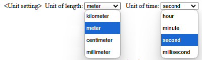
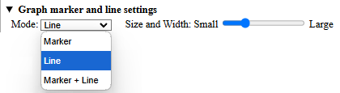
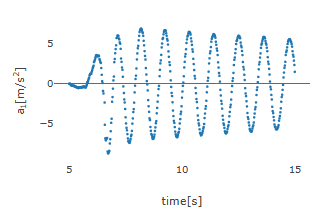
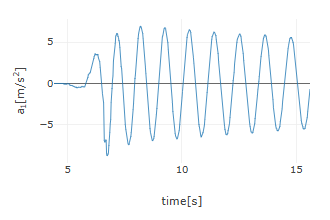
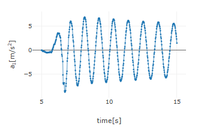
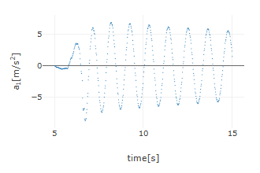
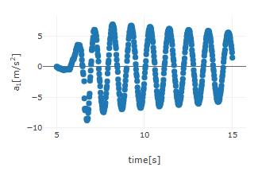
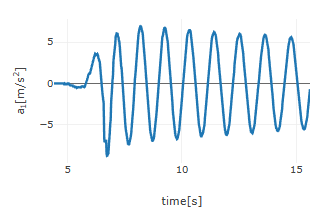

[ Operating guide ]
■ Settings
- Unit Settings
When you open this app and load a CSV file, the data table is displayed, and a "Unit Settings" row appears below it. In the unit settings, you can specify the unit for length (default: meter) and time (default: second). Length units can be selected from mm (millimeter), cm (centimeter), m (meter), and km (kilometer), while time units can be chosen from ms (millisecond), s (second), min (minute), and h (hour). The units set here determine the labels for position, velocity, and acceleration on the graph. By default, these units are m, m/s, and m/s2, respectively.
 - Graph Marker and Line Settings
When you open this app and load a CSV file, the "▶ Graph Marker and Line Settings" row appears below the "Unit Settings" row. Clicking this row expands the settings area for mode and size/width adjustments (clicking it again will collapse the area).
In the mode settings, you can choose from "Marker," "Line," or "Marker + Line," and the resulting graphs will look as shown below (in the order of "Marker," "Line," and "Marker + Line").
  The size/width adjustment slider allows you to set the marker size and line width. Below are examples of the smallest (slider at the far left) and largest (slider at the far right) marker sizes.
 Similarly, the examples below show the smallest (slider at the far left) and largest (slider at the far right) line widths.
